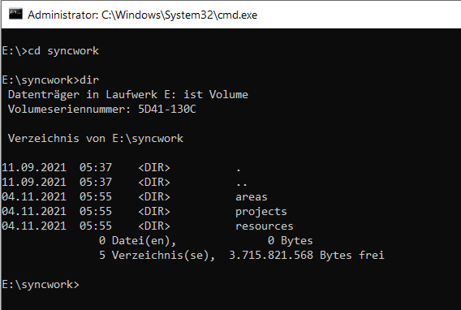
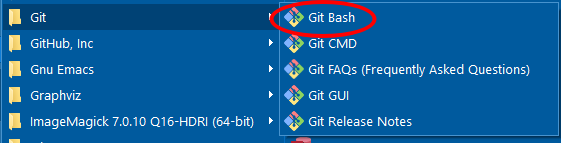

A2: Computer literacy for reproducible research¶

Overview¶
Computer literacy as a barrier to reproducibility¶
There exists multiple barriers to reproducibility
In “The Turing Way”, some of these Barriers to reproducibility are introduced
Among them:
Big data and complex computational infrastructure
Takes time
Requires additional skills
Overall objective¶
Introduce concepts and software tools
Provide necessary skills for subsequent modules
Topics that will be covered:
Be lazy, but trustworthy!
Organization of a research project on a computer (file/folder structure, naming conventions, etc.)
Working with files and folders (file system, absolute and relative paths, working directory)
Using a command-line interface (CLI)
The beauty of plain text
Disclaimer¶
Targets MS Windows user
Your mileage may vary…
Some derived principles of being a trustworthy researcher¶
Be trustworthy!
Document everything and be transparent in your research!
Share all materials (if possible)!
Ideally, also document and share workflows (→ automation)
….
Some derived principles of being lazy¶
“Be lazy!”
Be consistent!
Create your own guidelines
Reduce cognitive burden
Reduce decision fatigue
…
Automate as much as possible!
…
Organization of a research project¶
Research projects on your computer¶
What is a “project”?
“A series of tasks linked to a goal, with a deadline” [Forte, 2017]
A research project can be writing a paper, giving a conference presentation or a lecture, …
Ideally, all information, materials, data, …, should be located in a distinct project folder
That is, on your computer, everything you need to complete the project should be stored inside one folder (which, of course, can/should have multiple subfolders) – “a project should be self-sufficient”
A project’s folder structure¶
Be consistent!
A uniform folder structure helps to find items in older projects
Choose a structure and naming convention that fit your working style
Generally, folder and file names should consist of the letters a-z, the number 0-9, underscores, and should never include a blank space
I also use hyphens “
-” sometimes, e.g.,mail_weiss-bernd.pdf, then, the underscore is used to separate semantically different parts (e.g.,ps2021-03_gesis-panel-meet-the-expert,ps2020-11_utrecht_bigsurv20)Furthermore, it is advisable to never use capital letters, as this will increase the likelihood of being inconsistent
Folder and file names should be as short as possible, but as long as necessary to bring across the gist of its function/content
Folder structure of a conference presentation (not perfect)¶

This is related to a GOR presentation on “Investigating self-selection bias of online surveys on COVID-19 pandemic-related outcomes and health characteristics”
Data Carpentry suggests the following project layout¶
The following guidelines are copyed from the Data Carpentry website on “Introduction to automation” and aim at specific workflow utilizing R, Rmarkdown, and knitr:
data: the original raw data, you shouldn’t edit or otherwise alter any of the files in this folder. DATA ARE READ ONLY. If they are encoded in a supported file format, they’ll automatically be loaded when you call load.project().cache: Here is where you will store any data sets that (a) are generated during a preprocessing step and (b) don’t need to be regenerated every single time you analyze your data. You can use the cache() function to store data to this directory automatically. Any data set found in both the cache and data directories will be drawn from cache instead of data based on ProjectTemplate’s priority rules. We write them to .csv files (comma eperated values) so they are machine readable and can be easily shared.graphs: the folder where we can store the figures used in the project In our example, the figures are generated directly during the rendering of the RMardown file for the manuscript, but having the figures as standalone files may facilitate getting feedback from your collaborators, or save time if you just work on tweaking its appearance without having to recompile the full manuscript.src: our R code (the functions that will generate the intermediate datasets, the analyses, and the figures), it’s often easier to keep the prose separated from the code. If you have a lot of code (and/or if the manuscript is long), it’s easier to navigate.tests: the code to test that our functions are behaving properly and that all our data is included in the analysis. There are other directories that you may not need as a newcomer, but these will come on handy as you increase your knowledge and prowess with R.
(Source: https://datacarpentry.org/rr-automation/01-automation/index.html)
More suggestions to structure a data analysis project¶
Existing naming conventions (for files/folders, variable names etc.)¶
Avoide any whitespace characters
Some of the following examples are syntactically invalid in some programming languages, e.g., “kebab-case” does not work in R
Some of the most popular ways to combine words into a single string [Divine, 2018]:
CamelCase
camelCase
pothole_case/snake_case
kebab-case
this.case
likethis
…
Choose one naming convention and stick with it!

(Source: Artwork by @allison_horst)
{kind=link}
Where to store your data?¶
(the following applys to MS Windows only)
Quite often, only the
C:drive is initializedMost Windows software suggests to save your files in your “home directory”, e.g.
C:\Users\WeissIf, for some reasons, you cannot start your computer and need to reinstall everything, all your data is gone!
My suggestion: setup at least a second drive (
D:), which is for your data only.Below is my setup, which I have been applying for the last 20 years (the Google Drive is new, though):

Backup your data¶
Just do it!
Working with files and folders¶
Why bother?¶
When you write code, you often need to read or save data
For your RMarkdown document, you will store data, figures, tables etc. in different folders, and you need to access this information/material
So, you need to tell the software where your data can be found
How do you ensure that your code or your RMarkdown document can be processed on your colleague’s computer, your next computer, a remote server?
Examples of a folder/file path¶
MS Windows: Folder path to my workshop materials
E:\syncwork\projects\confer\ps2021-10-ws-repro-researchLinux (MSYS2): Folder path to my workshop materials
/E/syncwork/projects/confer/ps2021-10-ws-repro-researchFull file path specified in Stata to load a dataset (MS Windows):
use "J:\Work\PARI\PARI-F\data\pari-f_data_v0-1.dta"Full file path specified in R to load a dataset (MS Windows):
read.dta("J:/Work/PARI/PARI-F/data/pari-f_data_v0-1.dta")(confusing? see below…)
(Note, these are all examples of absolute path specifications)
What is a path?¶
“A path to an entity (in this case, a file, folder, or web page) describes the entity’s unique location within a hierarchical directory or website structure” (https://www.educative.io/edpresso/absolute-vs-relative-path).
“A path is a string of characters used to uniquely identify a location in a directory structure. It is composed by following the directory tree hierarchy in which components, separated by a delimiting character, represent each directory. The delimiting character is most commonly the slash (“/”), the backslash character (“"), or colon (“:”), though some operating systems may use a different delimiter. Paths are used extensively in computer science to represent the directory/file relationships common in modern operating systems, […]. Resources can be represented by either absolute or relative paths” (emphasis mine; https://en.wikipedia.org/wiki/Path_(computing))
Delimiting characters¶
THIS IS IMPORTANT !!$!!!Ӥ!111111
Delimiting characters
/or\vary by operating systemMS Windows:
Use a colon
:to specify the drive name (e.g.,c:,d:,e:)Folders and files are seperated by a backslash character (
\)Example:
J:\Work\PARI\PARI-F\data\pari-f_data_v0-1.dta
Linux/macOS:
No colon (
:)Use only the slash (
/) characterExample:
/E/syncwork/projects/confer/ps2021-10-ws-repro-researchAnother (dynamically created) example showing the (full) path to my Git slides (using the command
readlink):
!readlink -f a3_introduction-to-git.ipynb
/e/syncwork/projects/confer/ps2021-10-ws-repro-research/src/bw/a3_introduction-to-git.ipynb
Delimiting characters in R, \(\LaTeX\), Python, … under MS Windows¶
Software, such as R, \(\LaTeX\), Python, with a Linux/UNIX background but can be used in MS Windows as well but behave differently when it comes to specifying file/folder paths
That is, when specifiying a path (e.g., in R or \(\LaTeX\)) in MS Windows, these programs do not like the backslash character (
\) (the backslash is used for “escaping” other characters)Two solutions:
Use the slash character
/, e.g.:
library(haven) read.dta("J:/Work/PARI/PARI-F/data/pari-f_data_v0-1.dta")
Escape the backslash character via
\\, e.g.:
library(haven) read.dta("J:\\Work\\PARI\\PARI-F\\data\\pari-f_data_v0-1.dta")
For more information see, e.g., https://www.dummies.com/programming/r/how-to-work-with-files-and-folders-in-r/
Note: Many programming languages/statistical packages (R, Python, …) can dynamically create a full path that follows the rules of the respective operating system:
R:
file.path("J:", "Work", "PARI", "PARI-F", "data", "pari-f_data_v0-1.dta") [1] "J:/Work/PARI/PARI-F/data/pari-f_data_v0-1.dta"
Python:
import os os.path.join("e:", "folder1", "folder2", "file")
returns:
'e:folder1\\folder2\\file'(in Windows)Stata, actually, does not care…
use "J:\Work\PARI\PARI-F\data\pari-f_data_v0-1.dta"use "J:/Work/PARI/PARI-F/data/pari-f_data_v0-1.dta"
Johannes suggests a handy tool when working on both operating system: Path Copy Copy – Copy file paths from Windows explorer’s contextual menu
Absolute and relative paths¶
There exists two types of paths: absolute or relative paths
Example of an absolute path (in MS Windows):
J:\Work\PARI\PARI-F\data\pari-f_data_v0-1.dtaExample of a relative path (in MS Windows):
..\data\pari-f_data_v0-1.dta
Absolute paths (or full path)¶
Contains the entire path to the file or directory that you need to access
It will begin at you computer’s root directory (or respective Window’s drive) and will end with the file or directory that you wish to access
E.g., in MS Windows:
J:\Work\PARI\PARI-F\data\pari-f_data_v0-1.dtaorD:\tmp\yipiyy.txt
In Linux or macOS:
/home/weiss/important/yipiyy.txtAvoid using absolute paths as much as possible since it reduces the portability of your project (your colleague’s computer, someone who wants to reproduce your analyses)
Working directory and relative paths¶
A relative path is relative to a “fixed location” on your computer
Often, this “fixed location” is the so-called “working directory”
So, when starting your data analysis, you first define your “working directory” as absolute path – this is done just once!
All other file- or folder-related operations are defined relative to this working directory
The huge benefit: when you share your project with a colleague or move it to a new computer, you only have to define the working directory once, everything else should work flawelessly
How to define a working directory?
R:
setwd("full-path-to-working-directory")-Stata:
cd "full-path-to-working-directory"(cd= change directory)Python:
import os; os.chdir("full-path-to-working-directory")
How to get information about the current working directory?
R:
getwd()
> getwd() [1] "D:/Eigene Dateien/Dokumente"
Stata:
cd
.cd C:\Program Files\Stata15
Python:
import os; os.getcwd()(cwd = current working directory); see below for an example
import os
os.getcwd()
'E:\\syncwork\\projects\\confer\\ps2021-10-ws-repro-research\\src\\bw'
So, let’s assume the project “PARI-F” is located on drive
J:, the full absolute path isJ:\Work\PARI\PARI-FThe content of the project’s folder
PARI-Fis:
.
|-- analysis
|-- data
|-- doc
|-- pari-f.stpr
`-- report
Loading a dataset located in folder
data, can be accomplished as follows:In R:
library(haven); library(ggplot2) setwd("J:/Work/PARI/PARI-F") # Define working directory just once. read.dta("data/pari-f_data_v0-5.dta") # Absolute path: J:/Work/PARI/PARI-F/data/pari-f_data_v0-5.dta ... ggplot(...) ggsave("doc/my-fancy-plot.pdf") # Will be saved in J:/Work/PARI/PARI-F/doc/my-fancy-plot.pdf
Note: In R, I would actually suggest to use the package
herewhich avoids manually defining a working directory at allIn Stata:
cd "J:/Work/PARI/PARI-F" // Define working directory just once. use "data/pari-f_data_v0-5.dta", clear ... scatter x y graph export "doc/my-fancy-plot.pdf"
Shortcuts (
.and..) and the parent directory:The dot
.denotes the current working directoryThe dot dot
..denotes the parent directory, i.e., it points upwards in the folder hierarchyExample in R
library(haven); library(ggplot2) setwd("J:/Work/PARI/PARI-F/data") # Define working directory just once, now we are in /data. read.dta("pari-f_data_v0-5.dta") # Absolute path: J:/Work/PARI/PARI-F/data/pari-f_data_v0-5.dta ... ggplot(...) ggsave("../doc/my-fancy-plot.pdf") # Read: # - We are in J:/Work/PARI/PARI-F/data # - The plot should be saved to J:/Work/PARI/PARI-F/doc # - ".." = go to parent folder of data, i.e., J:/Work/PARI/PARI-F # - Then, go to folder /doc and store the plot in this folder
Finally, the tilde symbol
~will bring you back to your home directory, e.g.cd ~
Using a comand-line interface (CLI)¶
MS Window’s default comand-line interpreter (cmd.exe)¶

Windows PowerShell¶

The Bash shell (Linux, macOS, MS Windows, …)¶

Don’t always use a sledgehammer for the job¶
“When I fire up my Terminal app people that don’t know me well often look on in disgust, no doubt asking themselves what century I was born in. Surely they think, this is 2020! We have touch screens! Beautiful web apps! Amazing software with graphical interfaces! Yup. They’re fun. But, if your goal is to conduct a reproducible analysis, then you need to step away from those tools and dig into the command line. Another reaction is, don’t you know about this great R package to do that? I love R! But it’s not always the right tool for the job. Sometimes using R is like using a sledgehammer to pound in a nail or worse, sometimes it’s like using a sledgehammer to pound in a screw. I could, but why? Doing the same thing at the command line with bash commands would be so much easier.” (emphasis mine; https://riffomonas.org/code_club/2020-08-17-command-line-life)
What is a command-line interface (CLI)?¶
“A command-line interface (CLI) processes commands to a computer program in the form of lines of text. The program which handles the interface is called a command-line interpreter or command-line processor. Operating systems implement a command-line interface in a shell for interactive access to operating system functions or services. Such access was primarily provided to users by computer terminals starting in the mid-1960s, and continued to be used throughout the 1970s and 1980s on VAX/VMS, Unix systems and personal computer systems including DOS, CP/M and Apple DOS.”
(emphasis mine; https://en.wikipedia.org/wiki/Command-line_interface)
And what is a shell?¶
“In computing, a shell is a computer program which exposes an operating system’s services to a human user or other program. In general, operating system shells use either a command-line interface (CLI) or graphical user interface (GUI), depending on a computer’s role and particular operation. It is named a shell because it is the outermost layer around the operating system.”
Okay, but why?!¶
Fast and effcient way to interact with your computer
Important part of your automation toolbox to create a reproducible data analysis pipeline
“1-Click Reproducibility” or better (but less catchy): “1-Command-on-a-CLI Reproducibility”
Many functions that RStudio provides are actually based on command-line tools (Git, pandoc, \(\LaTeX\), …) – it might be helpful to understand what is happening under the hood
Accessing a remote server almost always requires some sort of command line skills
…
I also recommend “Top ten reasons to learn to use the command line: Expanding your reproducibility tools”, see https://riffomonas.org/code_club/2020-08-17-command-line-life
The Git Bash¶

Important commands¶
Note, some of these commands depend on the respective operating system
Almost all of these command can have several arguments, e.g.,
ls -laLinux cheatsheet: https://files.fosswire.com/2007/08/fwunixref.pdf
MS Windows cheatsheet: http://www.cs.columbia.edu/~sedwards/classes/2015/1102-fall/Command Prompt Cheatsheet.pdf
Description |
Win |
Linux, macOS |
|---|---|---|
Copy files, folders |
|
|
Move files, folders |
|
|
List folder content |
|
|
Create new folder |
|
|
Change current folder |
|
|
Show current path |
|
|
Danger zone No undo! |
||
Delete file(s) |
|
|
Delete folder(s) |
|
|
A small script to create a project folder¶
The following small bash/shell (on Windows: use the Git bash) script was introduced in the very beginning of this module. It initializes a new project folder. It even detects when you forget to submit a folder name for your project:
#!/bin/sh
# Yes, I had to google that...
# https://stackoverflow.com/questions/6482377/check-existence-of-input-argument-in-a-bash-shell-script
if [ $# -eq 0 ]
then
echo "No arguments supplied! You stupid!!!!!!"
exit 1
fi
mkdir $1
cd $1
mkdir data
mkdir src
mkdir output
touch .gitignore
touch README
Exercise¶
Start the Git Bash
List the content of the current folder via
ls -laDetermine where you are via
pwdGo to the parent folder via
cd <your input>Copy the content from my small script (see above, section A small script to create a project folder, use the little copy-icon in the top-right corner) and past it into a text file, save the text file as
create-project.shExecute the script
./create-project.sh(the./is important, for an explanation see here) without a folder nameExecute the script
./create-project.sh <your-new-project>with a folder name as argument
The power of plain text¶
Again, it is 2021, why would I write in plain text?¶
Version control (e.g., Git) works well (efficient, differences between versions are easy to understand) with plain text documents,
.docxet al. not so muchFuture proof
Can easily manipulated with external tools
…
Canonical reference: The Plain Person’s Guide to Plain Text Social Science by Kieran Healy
Encoding¶
Puh, what is (character) encoding?
See also https://www.w3.org/International/questions/qa-what-is-encoding.en
My only rule: Use utf-8
If you run into trouble, use a search engine your trust… which will most likely lead to a Stackoverflow page
Example: How to keep umlaut in R?
Notepad++ is my my tool of choice…
On the command line (Linux/Bash), you can use the command
file, see below for the encoding of my references file:
!file references.bib
references.bib: Unicode text, UTF-8 text, with very long lines (1869)
The power of regular expressions¶
“Regular expressions are specially encoded text strings used as patterns for matching sets of strings” [Fitzgerald, 2012]
Regex = Regular expressions
Regex can be really handy when it comes to:
Searching for highly standardized strings, e.g., Emails, URLs etc.
Search and replace in an automated fashion
Extract text
…
Regex are implemented in almost all programming languages, including Python, R, Stata
The following example utilizes Python for a brief demonstration of Regex. It uses the following sample text:
lalaal@gesis.org ysdfvysdfc sdcfasefasdf hhatz@gesis.org,
aselkjcf nöasjfasö djfcapsodfak http://www.gesis.org/welt
acsd1132 33.45 sklfdgssfd ef caois 12.1 willlst@gesis.org
http://www.gesis.org/helloworld
import re
sample = """lalaal@gesis.org ysdfvysdfc sdcfasefasdf hhatz@gesis.org,
aselkjcf nöasjfasö djfcapsodfak http://www.gesis.org/welt
acsd1132 33.45 sklfdgssfd ef caois 12.1 willlst@gesis.org
http://www.gesis.org/helloworld
"""
print(sample)
lalaal@gesis.org ysdfvysdfc sdcfasefasdf hhatz@gesis.org,
aselkjcf nöasjfasö djfcapsodfak http://www.gesis.org/welt
acsd1132 33.45 sklfdgssfd ef caois 12.1 willlst@gesis.org
http://www.gesis.org/helloworld
Extract all emails:
m = re.findall(r'[\w.+-]+@[\w-]+\.[\w.-]+', sample)
m
['lalaal@gesis.org', 'hhatz@gesis.org', 'willlst@gesis.org']
Extract all numbers:
m = re.findall(r'\d+', sample)
m
['1132', '33', '45', '12', '1']
Automation and productivity¶
There is a trade-off between automation and productivity
Automation, learning the required skills, setting up your tool chain will take a lot of time – but can also safe a lot of time
Find the sweet spot where you invest some time now to save – in the long run – more time and increase your productivity
“Find the sweet spot” – well, easier said than done
Never spend 6 minutes doing something by hand when you can spend 6 hours failing to automate it
— Zhuowei Zhang (@zhuowei) April 26, 2020
References¶
- AR21
Jesse M. Alston and Jessica A. Rick. A Beginner's Guide to Conducting Reproducible Research. The Bulletin of the Ecological Society of America, April 2021. doi:10.1002/bes2.1801.
- Bar18
Lorena A. Barba. Terminologies for Reproducible Research. arXiv:1802.03311 [cs], February 2018. arXiv:1802.03311.
- BD95
Jonathan B. Buckheit and David L. Donoho. WaveLab and Reproducible Research. In Anestis Antoniadis, Georges Oppenheim, P. Bickel, P. Diggle, S. Fienberg, K. Krickeberg, I. Olkin, N. Wermuth, and S. Zeger, editors, Wavelets and Statistics, volume 103 of Lecture Notes in Statistics, pages 55–81. Springer New York, New York, NY, 1995. doi:10.1007/978-1-4612-2544-7.
- Div18
Patrick Divine. String Case Styles: camel, Pascal, Snake, and Kebab Case. https://betterprogramming.pub/string-case-styles-camel-pascal-snake-and-kebab-case-981407998841, 2018.
- Fit12
Michael Fitzgerald. Introducing Regular Expressions. O'Reilly, Beijing, Köln, 1. ed edition, 2012. ISBN 978-1-4493-9268-0.
- For17
Tiago Forte. The PARA Method: a Universal System for Organizing Digital Information. https://fortelabs.co/blog/para/, February 2017.
- FP17
Jeremy Freese and David Peterson. Replication in Social Science. Annual Review of Sociology, 43(1):147–165, July 2017. doi:10.1146/annurev-soc-060116-053450.
- GFI16
Steven N. Goodman, Daniele Fanelli, and John P. A. Ioannidis. What does research reproducibility mean? Science Translational Medicine, 8(341):341ps12–341ps12, June 2016. doi:10.1126/scitranslmed.aaf5027.
- Hea19
Kieran Healy. The Plain Person's Guide to Plain Text Social Science. https://plain-text.co/, October 2019.
- Lee14
Thomas J. Leeper. Reproducible Research:what, Why, and How? 2014.
- Narkebski16
Jakub Narębski. Mastering Git: Attain Expert-Level Proficiency with Git for Enhanced Productivity and Efficient Collaboration by Mastering Advanced Distributed Version Control Features. Packt Publishing, Birmingham, 2016. ISBN 978-1-78355-375-4.
- Pen11
Roger D. Peng. Reproducible Research in Computational Science. Science, 334(6060):1226–1227, February 2011. doi:10.1126/science.1213847.
- PF16
Stephen R. Piccolo and Michael B. Frampton. Tools and techniques for computational reproducibility. GigaScience, 5(1):30, December 2016. doi:10.1186/s13742-016-0135-4.
- SWeiss20
Ines Schaurer and Bernd Weiß. Investigating selection bias of online surveys on coronavirus-related behavioral outcomes: an example utilizing the GESIS Panel Special Survey on the Coronavirus SARS-CoV-2 Outbreak in Germany. Survey Research Methods, 2(14):103–108, June 2020. doi:10.18148/SRM/2020.V14I2.7751.
- SLP14
Victoria Stodden, Friedrich Leisch, and Roger D. Peng. Implementing Reproducible Research. CRC Press, Boca Raton, 2014.